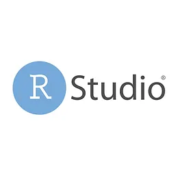

Katherine Saavedra Cortés
Welcome to my portfolio. I designed this site from the ground up to share my work, experience, and projects. Thank you for visiting 😀
View Portfolio
Katherine Saavedra
Data Analyst & Program Coordinator
About Me
I hold an MSc in Business Analytics and take on diverse projects, from community programs and after-school initiatives to freelance data analysis, specializing in market research, data labeling, and analytics. I’m a curious learner, passionate about challenges, and enjoy working with diverse teams. I’m always excited to contribute in any way I can, bringing my analytical and leadership skills to deliver meaningful results
Skills
- Data Analysis & Visualization
- Market Research
- Program Coordination
- Data Annotation
- Stakeholder Reporting
- Collaboration
- Project Coordination
- Community Outreach
Languages
- English (Fluent)
- Spanish (Native)
- Portuguese (limited)
Interests
- Community Outreach
- Education
- Technology
- Travel
- Reading
Portfolio / Projects

Data Exploration in Python
Context: Business data exploration.
Your role: Data analyst.
Impact: Automated reporting and actionable insights.
View Project
Your role: Data analyst.
Impact: Automated reporting and actionable insights.

Data Cleaning in SQL
Context: Raw sales data.
Your role: Data analyst.
Impact: Improved data quality for business decisions.
View Project
Your role: Data analyst.
Impact: Improved data quality for business decisions.
Tableau Projects
Context: Executive dashboards.
Your role: Visualization specialist.
Impact: Enhanced stakeholder understanding.
View Projects
Your role: Visualization specialist.
Impact: Enhanced stakeholder understanding.

Power BI Visualizations
Context: Financial reporting.
Your role: Dashboard creator.
Impact: Faster, clearer reporting.
View Project
Your role: Dashboard creator.
Impact: Faster, clearer reporting.

RStudio
Context: Customer reviews analysis.
Your role: Data scientist.
Impact: Identified key trends for marketing.
View Project
Your role: Data scientist.
Impact: Identified key trends for marketing.
Work Experience
-
Freelance Data & Research Specialist, Various Clients | Contract / Project-Based
2020–Present- Conduct data collection, cleaning, and validation for client projects across technology, retail, and real estate sectors.
- Perform statistical analyses and prepare tailored reports for 50+ clients.
- Support AI initiatives by annotating and curating datasets for machine learning.
- Design interactive dashboards (Tableau, Excel) to visualize key performance indicators.
- Communicate regularly with clients and cross-functional teams to align project goals.
-
Opus Site Supervisor, KeyNote, Home of San Diego Youth Symphony
2024–2025- Led daily operations for music after-school programs at two schools, overseeing 60+ youth and optimizing resource allocation.
- Facilitated weekly team meetings to assess progress, address program needs, and support staff development.
- Oversaw attendance tracking and monitored student engagement to support program evaluation and reporting.
- Maintained detailed records and generated reports to inform administrative decision-making and team coordination.
-
Recreation Specialist, The City of National City
2023–2025- Planned and implemented recreational programs for youth and families, fostering community engagement.
- Collaborated with local organizations to enhance program offerings and outreach.
- Monitored program participation and gathered feedback for continuous improvement.
- Maintained a safe and inclusive environment for all participants.
Volunteer Experience
-
Specialist Volunteer, Worldpackers
2019–2020- Assisted 10+ small businesses in community-based tourism and education projects across South America.
- Organized workshops and events to empower local entrepreneurs.
- Facilitated cross-cultural exchanges and language learning activities.
-
Project Leader, Universidade Federal da Integração Latino-
Americana, Brasil
01/2019–12/2020- Dedicated to empowering underprivileged communities in Brazil and Paraguay through organizing recreational activities for children.
- Coordinated volunteer efforts and managed project logistics.
Services
- Consulting: Data strategy and analytics
- Business Intelligence: Tableau & Power BI dashboards
- Data Cleaning & Preparation
- Project Coordination
- Market Research
- Data Visualization
- AI & Machine Learning Support